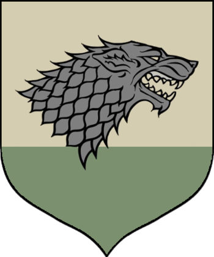

Game of Thrones World
House Stark
House Stark of Winterfell is a Great House of Westeros and the royal house of the Kingdom of the North. They rule over the vast region known as the North from their seat in Winterfell. It is one of the oldest lines of Westerosi nobility by far, claiming a line of descent stretching back over eight thousand years. Before the Targaryen conquest, as well as during the War of the Five Kings and early on in Daenerys Targaryen's war for Westeros, the leaders of House Stark ruled over the region as the Kings in the North.
Their rule in the North seemingly ended after the events of the Red Wedding when House Frey and House Bolton betrayed House Stark after forming a secret alliance with House Lannister, during which Roose Bolton murdered King Robb Stark. Both the North and Winterfell were taken over by House Bolton. However, the Boltons' hold was jeopardized when Sansa Stark escaped their clutches after learning her brothers Bran and Rickon Stark were still alive and reunited with her half-brother, Jon Snow, at Castle Black. Sansa and Jon marched on the Boltons to save their younger brother Rickon, who was later murdered by Ramsay Bolton, and retake Winterfell. House Stark was restored to their former stature after the Battle of the Bastards. The Stark victory led to House Stark's return to royal status in the North with their bannermen declaring Jon as the King in the North. He later abdicated his title as king in order to gain the full support of Daenerys Targaryen in the Great War, becoming the Warden of the North. Following the Battle of King's Landing, Bran Stark was chosen as the new king of the Six Kingdoms, allowing the North to secede as an independent kingdom under Sansa.
House Stark's sigil is a grey direwolf on a white background, over a green escutcheon. They are one of the few noble Houses whose family motto is not a boast or threat. Instead, the House Stark family motto is a warning, one that, no matter the circumstances, will always be relevant: "Winter Is Coming."
